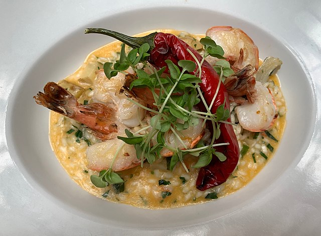

Risotto de Gambas

Risotto de gambas - Restaurant Danieli (Vienna, Autriche)
Description
Shrimp risotto is a creamy Italian rice dish made with tender shrimp and arborio or carnaroli rice. The rice is slowly
cooked by gradually adding warm seafood broth, which gives the dish its signature creamy texture. The shrimp adds a delicate,
sweet seafood flavor that blends with the savory notes of garlic, shallots, and parsley. A bit of lemon zest is often added to
brighten the dish and balance the richness. The result is a smooth, flavorful risotto that is both comforting and light,
making it a popular choice for seafood lovers.
Ingredients
- 8 oz clam juice
- 4 cups of water
- 3 tbsp butter
- 1 finely chopped large shallot
- 1 cup risotto rice (Arborio, carnaroli, or vialone nano
- 1 cup dry white wine
- 2 cups small pink shrimp
- 2 tbsp finely chopped parsley
- 1 tbsp finely grated lemon zest
- Kosher salt
Recipe Steps
- Heat the clam juice and water together until steamy but not boiling.
- Sauté finely chopped shallots in butter over medium heat until they become translucent.
- Add the risotto rice to the pot and cook, stirring, until the grains are well-coated and beginning to toast.
- Pour in dry white wine, stir vigorously until it boils, then reduce heat to a gentle simmer.
- Slowly add two ladles of the hot broth mixture, stirring well and seasoning with salt.
- Continue stirring constantly and adding broth ladle by ladle until the risotto coats the back of a spoon and the rice is nearly tender.
- Stir in the shrimp, parsley, and remaining butter, cooking until the last addition of broth is about halfway absorbed.
- Just before serving, mix in the lemon zest and serve immediately.